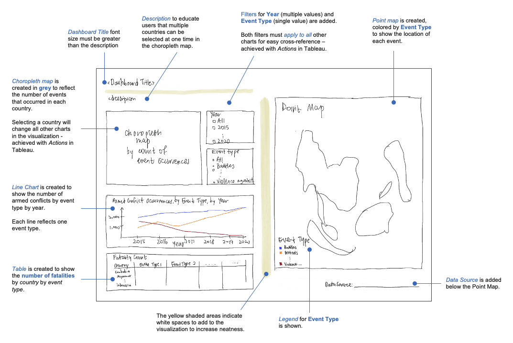

A. Critic
A critic of the following data visualization is provided in terms of clarity and aesthetics.

Clarity
| S/N | Critique | Suggestion |
|---|---|---|
| 1 | As the points on the map overlap each other (highlighted below), the map does not clearly show the frequency of events in each region.
|
Instead of using a point map, use a choropleth map to show the concentration of events in the region. The point map can be retained to show only one type of event instead of all events. |
| 2 | The dashboard is lacking the Event Date filter to allow users to select the event date period they are interested to view. | Create a filter for users to select the year (multiple values) they are interested to view. |
| 3 | The dashboard is lacking the Event Type filter to allow users to select the event type to show on the charts. | Create a filter for users to select the event type (single) value they are interested to view. This filter must also act on the point map. |
| 4 | The y-axis tick marks are of varying scale for Armed Conflict Event by Type. Should the user miss to notice this, the user will be comparing the event counts and trends incorrectly.
|
Create one line chart for Armed Conflict Occurrences, by Event Type by Year. Each event type will be a line (series). Ensure the lines are colored according to the legend of the choropleth map. All the event types will be on the same y-axis for easy comparison; there will only be 1 panel instead of 6 panels. |


Aesthetics
| S/N | Critique | Suggestion |
|---|---|---|
| 1 | The y-axis title of the line charts read “Count of Sheet1” when users do not know what Sheet1 is.
|
Rename the y-axis title to “Count” or remove the y-axis title entirely if count of events is clearly stated elsewhere (e.g. in the title). |
| 2 | The map and line chart has no blank space between each other, causing the visualization to look cramped.
|
Insert blank spaces between the map and the line chart. |
| 3 | The lines in the line chart are colored blue for all Event Types. This is misleading since the same blue color is used to represent Event Type: Battles in the map.
|
The lines in the line chart should follow the legend (colors) for Event Type used in the map. This creates consistency for the readers. |
| 4 | Event Type labels are wrapped while the text for the legend is not.
|
Ensure that text is wrapped so that the entire text is shown on the visualization instead of “…”. |
| 5 | The tooltips for the point map and line chart are neat.
|
Retain the neatness of the tooltip. Consider including more details in the tooltip e.g. location, notes of the event. |


B. Proposed Sketch

The tooltips for the visualization can be enhanced further.

C. Proposed Dashboard
Available here on Tableau Public.

D. Step by Step Guide
Preparing the data
Create a unique event ID for each observation in the data by first creating a new column titled “Event_ID_UNIQUE” to the left of ISO.
Insert the formula =F2&“_”&C2 into Cell A2.
EVENT_ID_CNTY is an individual identifier by number and country acronym that is updated annually, hence EVENT_ID_CNTY is concatenated with Year to result in a unique event ID across all years and all countries. This field is named Event_ID_UNIQUE.

Then, hover your cursor to the bottom right corner of cell A2. When a black cross appears, double-click on the black-cross. This will fill all the cells below Cell A2, up to the last observation.
Next, right-click on Column A. Select Copy.

Then, right-click-on Column A again. Select Paste Special > Values.

Once the above is completed, save your file as data.xlsx (Microsoft Excel file format).
We will be using EVENT_ID_UNIQUE to count the number of events for our data visualization on Tableau.
Go to Tableau, connect to the Microsoft Excel file: data.xlsx.

Go to Data > Edit Data Source Filters.

Click Add. Select Event Date.

Select Years.

Tick years 2015 to 2020. Then press OK.

Go to File > Save As, save the Tableau workbook as dataviz3.

Creating the choropleth map
Right click Sheet1, select Rename. Rename the sheet to “Choropleth”.

From the Data pane, drag Longtitude to Columns and Latitude to Rows.

From the Data pane, drag Event ID UNIQUE to the Marks pane: Color.

Select Add all members when the dialogue below appears.

In the Marks pane, click on the down arrowhead next to for Event ID UNIQUE. Select Measure > Count.

From the Data pane, drag the following to the Marks pane.
Country to Marks: Label
Country to Marks: Detail
Fatalities to Marks: Tooltip
The Marks pane should look like this.

In the Marks pane, change the chart type to Map.

In the Marks pane, click on Color > Edit Colors. Change Automatic to Gray.

From the Data pane, drag Event Date to Filters.

Select Years.

Select All. Ensure that all the years from 2015 to 2020 are ticked. Then press OK.

From the Data pane, drag Country to Filters. Click All, then OK.

From the Data pane, drag Event Type to Filters.

Click on the down arrowhead of YEAR(Event Date) in the Filters pane. Go to Apply to Worksheets > All Using This Data Source.

Repeat Step 11 for Country and Event Type in the Filters pane.
Click on the down arrowhead of YEAR(Event Date) in the Filters pane. Select Show Filter by ensuring there is a tick next to Show Filter.

Repeat Step 13 for Country and Event Type in the Filters pane.
For the filter: Event Type shown, click the down arrowhead next to Event Type. Select Single Value (list).

Creating Dot by Event Type for tooltip
In the toolbar on the top, go to Worksheet > New Worksheet.

Rename the worksheet to “Dot by Event Type”.
From the Data pane, drag Event Type to Columns and Event ID UNIQUE to Rows.

In the Rows, click on Event ID UNIQUE and go to Measure (Count) > Count. Ensure there is a tick next to Count.

From the Data pane, drag Country to Color in the Marks pane.
From the Data pane, drag Fatalities to Size in the Marks pane.
In the Marks pane, change chart type from Automatic to Circle.

From the Data pane, drag Fatalities to Label in the Marks pane.
Right click on Event Type in the chart. Select Hide Field Labels for Columns.

In the Marks pane, click on Label. Click on “…” next to Text.

Click on the double headed arrow next to Alignment. Select Top in the Vertical section.

In the Edit Label dialogue box, set Font to Tableau Book, size to 8 and color to the fourth shade of gray per screenshot below.
Add “deaths” to the line below <SUM(Fatalities)>.
“<SUM(Fatalities)>” is bold while “deaths” is not bold.

Right click on the x-axis and select Format.

In the Format Event Type pane, set Font size to 8. Set Alignment to Wrap: On.

Double click on the y-axis. Remove “Count of Event ID UNIQUE” from the Axis Titles:Title.

In the Format CNT(Event ID UNIQUE) pane, go to Numbers. Select Numbers (Standard).

From the taskbar, change the Fit to Fit Width.

The Dot by Event Type chart should look like this.

Go to the worksheet named Choropleth. In the Marks pane, click on Tooltip.

In the Edit Tooltip dialogue box, edit the text to the following.
<Country>
<CNT(Event ID UNIQUE)> armed conflicts and <SUM(Fatalities)> deaths recorded.
Number of Armed Conflicts
<Sheet name=“Dot by Event Type” maxwidth=“500” maxheight=“300” filter=“<All Fields>”>

<Country>
Tableau Book, Size 12, Bold
Color = black (darkest gray)<CNT(Event ID UNIQUE)> armed conflicts and <SUM(Fatalities)> deaths recorded.
Tableau Book, Size 10
Color = black (darkest gray)
Only <CNT(Event ID UNIQUE)> and <SUM(Fatalities)> deaths are in bold.Number of Armed Conflicts
Tableau Book, Size 10, Underlined
Color = third-lightest shade of gray
<Sheet name=“Dot by Event Type” maxwidth=“500” maxheight=“300” filter=“<All Fields>”>
Go to Insert > Sheets > Dot by Event Type. Edit the maxwidth and maxheight to “500” and “300” respectively.

The choropleth map is shown below.

When hovering onto an individual country, the tooltip appears to reflect the number of armed conflicts, number of deaths and the event type for the country. In the screenshot below, Indonesia is shown.

Creating the point map
In the toolbar on the top, go to Worksheet > New Worksheet.
Rename the worksheet to “Point Map”.
From the Data pane, drag Longitude to Columns and Latitude to Rows. Next, drag Event Type to Color in the Marks pane and Event ID UNIQUE to Detail in the Marks pane.

In the Marks pane, click on Size. Reduce the size per screenshot below.

In the Marks pane, click on Color. Go to the dropdown for Border and select the gray color as shown in the red box below.

Hold onto Ctrl and select the following fields from the Data pane. Drag them to Tooltip in the Marks pane.
Country, Event Date, Event Type, Location, Notes, Sub Event Type, Fatalities

In the Marks pane, click on Tooltip. In the Edit Tooltip dialogue box, remove the irrelevant fields and rearrange the fields accordingly (see screenshot below). Note that <ATTR(Notes)> is not bold. Click OK to save your tooltip.
Country: <ATTR(Country)>
Location: <ATTR(Location)>
Event Type: <Event Type>
Sub Event Type: <ATTR(Sub Event Type)>
Event Date: <ATTR(Event Date)>
Fatalities: <SUM(Fatalities)>
<ATTR(Notes)>
When hovering onto a point, the tooltip now appears and shows the details of the event at that point.

Creating the line chart
In the toolbar on the top, go to Worksheet > New Worksheet.
Rename the worksheet to “Line by Event Type”.
From the Data pane, drag Event Date to Columns and Event ID UNIQUE to Rows. Next, drag Event Type to Color in the Marks pane, Country to Tooltip in the Marks pane, and Fatalities to Tooltip in the Marks pane.

From Rows, click on the down arrow next to Event ID UNIQUE. Select Measure > Count.

Double click on the y-axis. Remove “Count of Event ID UNIQUE” from the Axis Titles:Title.

Right click on the y-axis. Select Format.

On the left panel, go to Font and change font size to 8.

Then, go to Numbers and select Number (Standard).

Right click on the x-axis. Select Format.
On the left panel, select Font and change font size to 8.

Double-click on the Title of the chart. In the Edit Title dialogue box, type the following. Ensure that the font type, size and color is chosen as Tableau Light, 10 and gray (per screenshot). Click OK.
Armed Conflict Occurrences, by Event Type by Year

From the taskbar, change the Fit to Entire View.

In the Marks pane, click on Tooltip. In the Edit Tooltip dialogue box, rearrange the fields accordingly and update the text (see screenshot below). Note that <Event Type> is not bold, instead it is italicized. Click OK to save your tooltip.
<CNT(Event ID UNIQUE)> <Event Type> happened in <ATTR(Country)> in <YEAR(Event Date)>.
<SUM(Fatalities)> deaths recorded.

Right click on Event Date. Select Hide Field Labels for Columns.

The line chart is shown below.

The tooltip appears when you hover over a point.

Create table for Fatality Count
In the toolbar on the top, go to Worksheet > New Worksheet.
Rename the worksheet to “Fatality Count”.
From the Data pane, drag Event Type to Columns and Country to Rows. Next, drag Fatalities to Text in the Marks pane.

From the taskbar, change the Fit to Entire View.

Right click on Event Type in the chart. Select Hide Field Labels for Columns.

Double-click on the Title of the chart. In the Edit Title dialogue box, highlight <Sheet Name>. Update font type, size and color to Tableau Light, 10, Bold and Italicized (per screenshot below). Click OK.

In the table, right-click on Battles. Select Format….

On the left panel, go to Font. Update font to Tableau Regular and size to 8.

In the table, right-click on Battles. Select Format….

On the left panel, go to Pane. Update font to Tableau Book and size to 7.

Then go to Alignment section. Go to Pane > Horizontal, select Center.

In the table, right-click on Cambodia. Select Format….

On the left panel, go to Font. Update font to Tableau Book and size to 7.

Next go to Alignment > Horizontal, select Center.

In the Marks pane, click on Tooltip. In the Edit Tooltip dialogue box, update the text to the following. Click OK.
<Country> had <SUM(Fatalities)> deaths from <Event Type>.

The table, with tooltip, is shown below.

Preparing the dashboard
In the toolbar on the top, go to Dashboard > New Dashboard.

At the bottom of your window, right-click on Dashboard 1. Select Rename. Rename the dashboard.
Armed Conflict Frequency in Southeast Asia

From the Dashboard pane, tick show dashboard title.

Double-click on the dashboard title.

In the Edit Title dialogue box, update the font attributes accordingly. Click OK.
Tableau Book, Size 15, third shade of gray

From Dashboard: Sheets, drag Choropleth to the bottom half of the dashboard.
Resize the choropleth map by dragging the top border upwards.


From Dashboard: Sheets, drag Point Map to the right of the dashboard. Release your cursor only when you see the long shaded rectangle below.


From Dashboard: Sheets, drag Line by Event Type to the bottom of the choropleth map - you will have to move your cursor to the horizontal scroll bar. Release your cursor only when you see the shaded rectangle below.


From Dashboard: Sheets, drag Fatality Count to the bottom of the line chart. Release your cursor only when you see the shaded rectangle below.


For Fatality Count, resize (drag) the column headers to ensure that the labels are clearly shown. For instance, “Violence against civilians” should be shown and not “Violence agains…”.


On the dashboard, right-click on the choropleth map title: Choropleth and select Hide Title.

Select the Country filter. Click on the cross to remove the filter from the dashboard.

Rearrange the filters such that the filter for Year of Event Date is positioned above the filter for Event Type.


From the Dashboard pane, select Objects: Text and drag to the dashboard title. Release your cursor only when you see the shaded rectangle below.

In the Edit Text dialogue box, enter the following.
Select a country from the map below to drill-down. To select multiple countries simultaneously, hold the Ctrl (control) key and click on each country.
Update font to Tableau Book, Size 10 and third shade of gray. Press OK.

Select the dashboard title. Drag the title to above the text “Select a country…”.


Then resize both the title and the text.

Right-click on the title: Point Map. Change the text to the following. To add <Event Type>, go to Insert, select ATTR(Event Type).
<Sheet Name> of Event (<Event Type>)

From the Dashboard pane, select Objects: Blank and drag to the center of the dashboard. Release your cursor only when you see the shaded rectangle below.

Reduce the size of the blank. Refer to the screenshot on the right, below.


Select the legend Count of Event ID UNIQUE. Click the down arrowhead and select Floating.

Double click on the legend title: Count of Event ID UNIQUE. In the Edit Legend Title dialogue box, change the font size to 7. Update the text to the following.
Number of Occurrences

Drag the legend to the top right of the choropleth map. Right click on the color scale and select Format Legend.

In the Format Legends pane, go to Font and update font size to 7.

Select the legend Event Type. Click the down arrowhead and select Floating.

Move the legend to the bottom left of the point map.

Extend the size of the filters Year of Event Date and Event Type to ensure that no scrolling (horizontal/vertical) is required for both filters.

asdf

In the toolbar on the top, go to Dashboard > Actions.

Go to Add Actions, select Filter.

In the Add Filter Action dialogue box, set the Name as “Select on Choropleth”.
For Source Sheets, tick only Choropleth, leaving the other three un-ticked.
Run action on: Select.For Target Sheets, tick all sheets.
Clearing the selection will: Show all values.
Hover your cursor over the point map. Ensure that the map is not fixed i.e. ensure that the pin icon (below) does not have a cross. If there is a cross, click on the pin once to remove the cross.

Last but not least, we will add text stating the data source. From the Dashboard pane, select Objects: Text and drag to the bottom of the point map.

In the Edit Text dialogue box, update the text to the following.
Data Source: The Armed Conflict Location & Event Data Project (ACLED)
Ensure that the font is set to Tableau Book, size 9, and the third-shade of gray (in screenshot below). Align the text to the right. Note that “The Armed Conflict Location & Event Data Project (ACLED)” is italicized.

The dashboard is completed (available here). You can select a country from the choropleth map, and the other charts will change accordingly.
E. Main Observations
From 2015 to 2020, Philippines has recorded the highest number of armed conflicts at 11,092 occurrences.

When drilling down by Event Type,
Myanmar has the highest number of Battles and Explosions/Remote Violence in the region.


Indonesia has the highest number of Protests and Riots in the region.


Philippines has the highest number of Strategic Developments and Violence against civilians in the region.

Protests and Riots are on the rise from 2015 to 2020 in the region.


In 2020, Indonesia has the highest number of protests (1,050), followed by Thailand (679).

Despite the emergence of the coronavirus pandemic, Thailand faced a spike of protests from 2019 (164) to 2020 (679). Led by high school and university students, the young people are calling for the dissolution of parliament, an end to harassment of government critics and for changes to the military-backed constitution (Ratcliffe, 2020).

Violence against civilians is on the decrease in the Southeast Asia region since 2016.
Year 2015 is excluded because there is no data for Philippines for year 2015.

Philippines has the greatest number of violence against civilians (6,621) and related fatalities (8,286), despite the count of violence against civilians decreasing over the years.


On the contrary, Myanmar and Indonesia are facing a rise in violence against civilians.